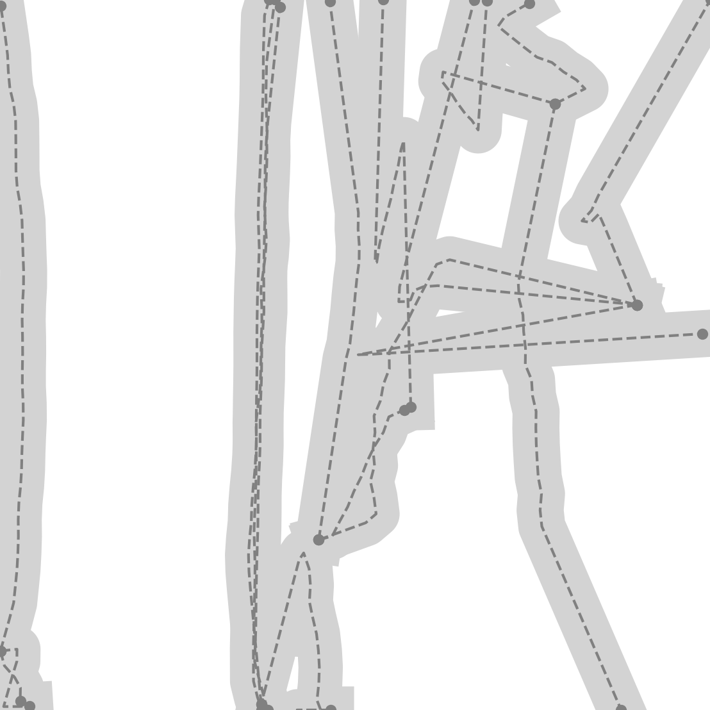

In the following project, we present the first reimplementation of the paper,
HDMapGen: A Hierarchical Graph Generative Model of High Definition Maps, a autoregressive graph neural network model for generating high-definition (HD) 2D road maps. The project presents a comprehensive analysis of modifications made to the original model to ensure functionality and effectiveness. Furthermore, we contribute to the field by releasing the source code for our reimplementation alongside pre-trained weights specifically optimized for the nuPlan dataset.

Figure 1: nuPlan Generations
1. Introduction
The HDMapGen paper modifies the GRAN architecture to generate High-definition maps. As our base approach, we use a modified version of GraphRNN - an older auto-regressive architecture - to serve as our baseline. We found that graphRNN usually fails to learn even simpler road maps.
Figure 2: GraphRNN fails to converge
The base performance of GRAN architecture on these maps is also unsatisfactory.
Figure 3: Base GRAN with embeddings also fails
We identified shortcomings in the GRAN architecture and addressed them through several modifications. The subsequent sections detail the impact of these changes on the final learning performance. It's important to note that similar modifications were not explored with GraphRNN.
For most experiments, we present results on a simpler grid dataset, which is included in our base code. This grid graph serves as a valuable benchmark to test the model's core functionality. Our experiments reveal that results on the grid dataset generalize well to the larger nuPlan dataset, where the final network training takes place.
In addition to the experiment details, we are also releasing our implementation along with trained weights for a subset of the nuPlan dataset. Weights for the model trained on the complete nuPlan dataset will be made available upon the release of the "SLEDGE" code.
2. Experiments
The base GRAN model learns only the adjacency matrix. We first extend it by adding an additional head to predict node positions using L2 loss. Subsequently, the predicted node positions, along with the learned latent adjacency representation, were used to predict subnode positions, again with L2 loss.
(a) Subnodes
(b) Only Nodes with coordinates
Figure 4: The base GRAN works successfully for 3x3 grid
While just making the modifications work for a small 3x3 grid, they fail for larger graphs, even for 5x5 grids:
(a) Subnodes
(b) Only Nodes with coordinates
Figure 5: The base GRAN breaks even for slightly more complex grid
These limitations necessitated modifications to both the training strategies and model architecture choices.
2.1 Adding noise to the node(and subnode) positions
While training on graphs larger than 5x5, we observed a critical issue. The training dataset solely included graphs with specific node positions (e.g., (1,1) or (1,2) etc). During the autoregressive generation process, any deviation from these exact positions – for instance, if (1,1) changed to (1.0059, 0.99956) – resulted in a complete collapse of the graph generation.
Figure 6: Deviation from training positions (28 sec) causes collapse
To address this challenge, we introduced a small amount of Gaussian noise to each node position. This intervention effectively helped the model learn a more generalizable underlying structure for the graphs.
Figure 7: Addition of noise stablizes the training and helps the generation
This approach is analogous to data augmentation techniques commonly employed in other deep learning applications However, in our case level of noise depends on the chosen node position representation. In dense normalized graphs, the standard deviation must be low. Conversely, sparser graphs necessitate a higher level of noise to encourage exploration of a wider range of positions during training.
2.2 Implementation of subnode prediction network
In the HDMapGen paper, authors learn the subnode prediction network and node prediction + adjacency prediction network separately. In contrast, our implementation leverages a joint training strategy.
We employ L2 loss for subnode prediction, aiming for precise subnode coordinate forecasts when edges exist. Conversely, for non-existent edges, we predict subnode coordinates as (0,0). To achieve this, we incorporate an additional MLP (Multi-Layer Perceptron) within the network. This MLP takes two inputs:
The positions of the two nodes between which subnodes are to be predicted.
The latent representation of adjacency for the nodes, indicating the presence or absence of edges.
The MLP's output is then modulated by a weighting factor. This factor is 1 when the adjacency network predicts an existing edge, effectively enabling the subnode prediction. Conversely, the factor becomes 0 when no edge is predicted, essentially disregarding the subnode prediction in such scenarios.
Thus in our model, a wrong prediction of an edge gives a larger loss because of the subnode network. So, subnode predictions contribute to stabilizing the learning process for the adjacency matrix. Consequently, we can train the entire model jointly in a single step, eliminating the need for separate training stages as employed in HDMapGen.
(a) Trained with subnodes
(b) Trained without subnodes
Figure 8: When training with subnodes for similar amount of epochs, we recieve more consistent generations.
2.3 Replacing L2 loss with 2D Gaussian Mixture Model Loss
The authors of the HDMapGen paper employ GMM loss instead of the more common L2 loss function. While the paper does not explicitly discuss the rationale behind this choice, our experiments using L2 loss provide valuable insights into the potential advantages of GMM loss.
Consider two discretized grids, one of size 3x3 and another of size 4x4, with node generation ordered using Depth-First Search (DFS). For the 3x3 grid, the DFS traversal would result in the following node generation sequence:
[1,1] → [1,0] → [0,0] → [0,1] → [0,2] → [1,2] → and so on
Similarly, for the 4x4 grid, the sequence would be:
[1,1] → [1,0] → [0,0] → [0,1] → [0,2] → [0,3] → and so on
Crucially, for the same underlying sequence, the model can potentially predict two distinct positions due to the discretization of the grid space. When using L2 loss, the model might be inclined to favor an average position between these two valid options. However, ideally, we would prefer the model to definitively select one of these positions.
Given the limitations of L2 loss in this scenario, GMM loss emerges as a more suitable alternative. GMM loss allows the model to capture the inherent multi-modality of the problem, effectively representing the two possible prediction points within the grid space. This enables the model to make a more precise selection, aligning better with the desired outcome.
(a) L2 loss fails on a dataset of 3x3 with 4x4 grids
The baseline implementation of GRAN lacks a dedicated "stop node" mechanism. During training, it records a distribution over the number of nodes present in various graphs within the dataset. At test time, it generates a graph with the maximum number of nodes observed during training. Subsequently, it samples the number of nodes from the learned distribution and discards any nodes exceeding that sample.
For instance, if the training data comprises equally distributed graphs of sizes 3x3, 4x4, and 5x5, the model will consistently generate a 5x5 graph. It then samples the number of nodes from the set {9, 16, 25} and discards any nodes exceeding the sampled value. While this strategy proved effective for GRAN's task of solely generating adjacency matrices, it can introduce artifacts in our scenario.
(a) 4x4 graph preterminated
(b) 3x3 grid with extra generated nodes
Figure 10: Failure cases because of no stop node
To address this limitation and facilitate task-specific generation, we introduce a novel "stop node" concept. This node connects to all previously generated nodes and serves as a signal for the model to terminate the generation process. The inclusion of this stop node ensures that the model generates graphs with the desired number of nodes, eliminating the generation of unnecessary nodes and associated artifacts.
Figure 10: Introducing 'STOP NODE' leads to successful multigraph generation
2.5 Effect of number of mixtures
Our experiments revealed a positive correlation between the number of Gaussian mixtures employed in the GMM loss function and the resulting model performance. We hypothesize that this performance improvement will eventually plateau at a specific number of mixtures. However, due to training resource limitations, we were unable to exhaustively test a wider range of models on the entire nuPlan dataset.
In lieu of a comprehensive evaluation on the full dataset, we utilized loss curves as a proxy to gauge model performance. By analyzing the loss curves, we could observe the impact of increasing the number of Gaussian mixtures on the model's ability to learn and minimize the loss function.
Figure 11: Training Curve Comparision: The yellow curve corresponds to 20 mixtures
3. BibTeX
@misc{agshar96HDMapGenReimplementation,
author = {},
title = {{H}{D}{M}ap{G}en: {R}eimplementation and {E}xperiments --- agshar96.github.io},
howpublished = {\url{https://agshar96.github.io/HDMapGen_Reimplemented/}},
year = {2024},
}